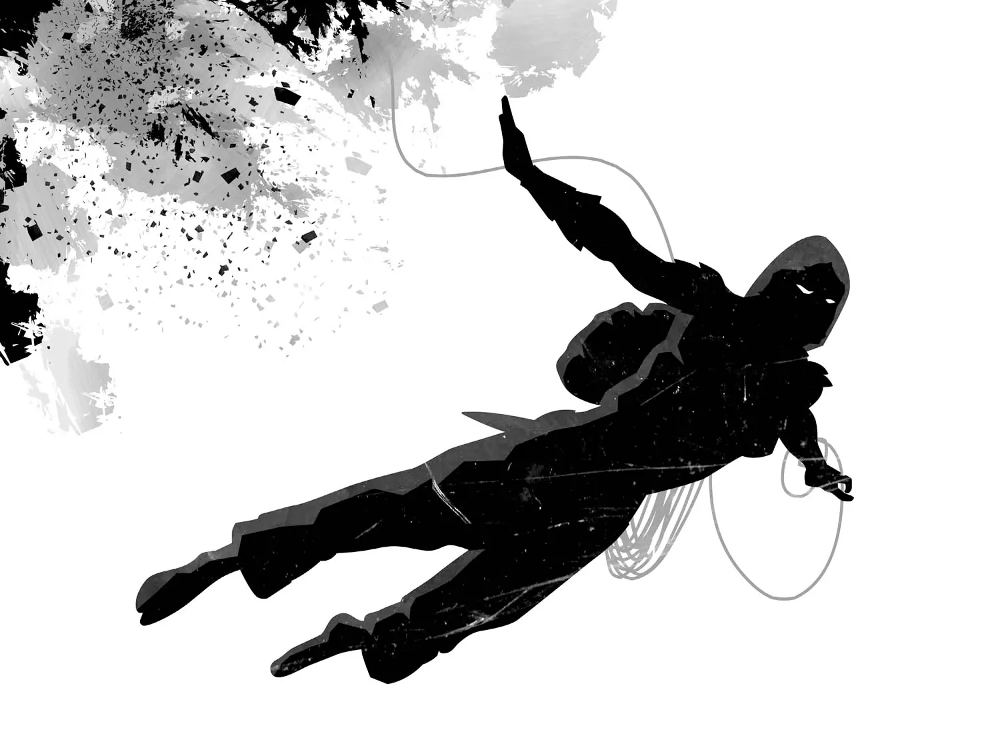
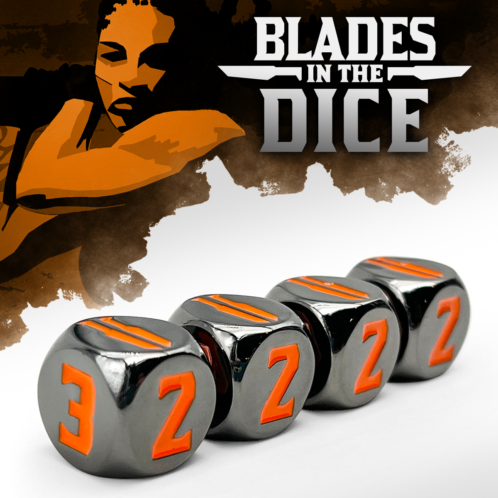
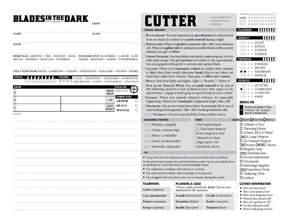

When Preparation
Becomes a Curse
The Cost Problem in BitD's Rolls
1. When Careful Play Starts Creating Trouble
Some tabletop problems do not appear when people play carelessly. They appear when people play carefully. That is why this problem took a long time to recognize. The table was not ignoring the fiction, skipping preparation, or trying to avoid consequence. If anything, the problem became clearer when players tried to respect the danger.
The game that made this tension visible to me was Blades in the Dark, a tabletop RPG about crews taking dangerous jobs in a haunted industrial city. Its roll system is built around position, effect, and consequence: characters often succeed, but success frequently arrives with cost. That makes the game fast, pressured, and good at pushing the fiction forward.
The question that interests me is what happens when this structure meets a careful, investigative style of play. If a player wants to reduce risk by asking questions, preparing routes, and gathering information, the game still needs those actions to interact with the dice. But the dice are also where cost enters.
The problem did not begin as a theory. It began as a repeated table feeling. A careful character investigated, prepared, checked one more angle, and tried to enter the decisive scene with better control. Yet after several such steps, the fiction often felt heavier rather than safer. There were more clocks, more attention, more small debts, more partial costs, more things that had to be managed before the main confrontation even started.
At first this seemed like an ordinary problem of difficulty. Perhaps the table was simply too harsh. Perhaps I was too attached to a detective-player fantasy. Perhaps Blades in the Dark was doing exactly what it was supposed to do, and I had not yet adjusted my expectations. Those explanations were plausible enough that the question stayed blurry for a long time, which is why the answer cannot simply be presented as if it were obvious from the start.

1.1 Not Failure, but Accumulated Cost
The symptom was not "bad things happen." BitD would be a worse game if crime were clean and painless. The symptom was more precise: careful play could accumulate cost in a way that made care itself feel suspicious. A player who asked more questions and made more preparations sometimes seemed to create more opportunities for consequence than a player who acted directly.
This feeling was especially visible around investigation. A player might look into the location, speak with a contact, confirm the target's schedule, and prepare an entry route. Each step made sense in the fiction. Each step could also become a roll. By the time the decisive action arrived, the careful player had already opened several doors through which cost could enter.
1.2 Preparation Passes Through the Cost Machine
The first pattern, then, was not that preparation had no value. Preparation clearly changed position, effect, available options, and the player's understanding of risk. The pattern was that preparation often had to pass through the same engine that generates cost. The more the player wanted the system to recognize their preparation, the more often they had to expose that preparation to the roll.
The table feeling was not "I failed." It was "I did the careful thing, and the careful thing gave the game more chances to charge me."
2. The Usual Fixes Miss Something
For a while I tried to solve the feeling with the usual explanations. Maybe the table was asking for the wrong rolls. Maybe the consequences were too harsh. Maybe preparation should simply happen outside the mechanics. Those answers are useful, but none of them fully explained why the same discomfort kept returning.
This matters because the contradiction between dice and cost was not the first thing I saw. It is what remained after the simpler repairs helped, but did not remove the shape of the problem.
2.1 The GM Is Not the Whole Problem
The first explanation was GM judgment. Maybe the GM was calling for too many rolls. Maybe the consequences were too sharp. Maybe actions that should have been controlled were treated as risky. This explanation is partly useful because BitD absolutely depends on judgment. Position, effect, consequence, and fictional framing are not automatic.
But this explanation was not enough. Even with a reasonable GM, investigation can still be dangerous. Contacting a witness can reveal interest. Following a lead can alert a faction. Preparing a route can cost time. The game is not wrong to say that these actions have pressure. So the problem cannot be solved simply by declaring all preparation safe.
2.2 Rolling Less Makes the Problem Vanish Too Cleanly
The next explanation was that investigation and preparation should roll less. This also helps. If a character asks an obvious question, has the right access, and there is no meaningful danger, the GM should probably answer directly. Some information should simply be given. Some preparation should simply stand.
Yet this solution has a cost of its own. Dice are not just a resolution machine; they are one of the main ways players touch the system. If investigation, preparation, and expertise never enter the mechanics, then a whole style of play becomes mechanically invisible. The player may still describe careful action, but the game itself is waiting elsewhere.
2.3 The Dice Are Doing Two Jobs at Once
The explanation that finally held was structural. BitD wants rolls because rolls are play. But BitD rolls are also built around consequence. Even a capable character with a strong dice pool does not cleanly succeed most of the time. 4-5 results appear often, and 1-3 results remain possible.
This means the system has two needs that pull against each other. It needs players to roll, because rolling is how the system becomes active. But every roll creates a real chance of cost. One roll is not the issue. The issue appears when careful play creates a sequence of rolls before the decisive scene, and therefore creates a sequence of possible costs before the decisive scene.

3. Competence and Preparation Pay the Same Toll
The pattern becomes clearer if the problem is split in two. First, what happens to a character who is supposed to be good at something? Second, what happens to a crew that spends more time preparing because it wants to reduce risk? Neither case proves that BitD is broken. Both show why the ordinary roll structure can produce a specific player experience: competence feels less rewarding than expected, and preparation feels less protective than expected.
3.1 Being Skilled Does Not Always Feel Safer
Take a capable character. They are good at the relevant action and roll a strong pool. They will succeed more often than an untrained character, but many successes will still be successes with consequence. In a system where "success with cost" is common, competence can become less visible than the player expects.
The character gets through the door, convinces the witness, traces the clue, or slips past the guard. But each success may pull another thread loose. The player can start to feel that competence changes probability, but not the emotional rhythm of play. They are still paying constantly, just with better odds and sometimes better terms.
3.2 Careful Planning Creates More Cost Windows
Now take a prepared crew and an unprepared crew. The prepared crew investigates the location, checks the patrol route, contacts a source, confirms the target's schedule, and prepares an escape route. The unprepared crew begins with only the basic information. In many RPGs, the prepared crew should feel safer because earlier work has compressed uncertainty.
In BitD, the prepared crew may indeed gain more options and better fictional position. But if those preparations required several rolls, the prepared crew has also passed through several cost windows. The unprepared crew may be ignorant, but it may also have exposed itself to fewer pre-action consequences. This does not prove that preparation is bad, but it explains why preparation can feel like a burden.
3.3 The Road to Safety Passes Through Risk
This is the core contradiction I wanted to isolate. BitD needs dice because dice are a major part of play. But because dice often generate consequence, more engagement with the system can also mean more exposure to cost. The contradiction becomes painful when the actions that create extra rolls are exactly the actions that should make the player feel careful, capable, or prepared.
The problem is not that BitD has cost. The problem is that the route toward earning safety often travels through the machinery that produces new cost.
4. Keep the Roll, Change What It Can Cost
If this is the problem, then the solution should not be crude. It should not simply remove rolls, and it should not simply make every consequence softer. The goal is to preserve the gameplay of dice while making preparation and competence visible in the type of cost that appears.
4.1 Smaller Punishments Are Not Always Better
Rolling less is sometimes correct, but it cannot be the whole answer. If careful play never touches the mechanics, then the player who enjoys planning is left with narration rather than play. They do not only want permission to say smart things. They want the system to recognize those smart things.
Reducing the severity of the same consequence is also incomplete. If the consequence is harm, then "less harm" can still feel wrong. If the consequence is exposure, then "minor exposure" can still feel like the wrong lesson. A player who prepared well may not be asking for a smaller punishment. They may be asking why this category of punishment is still appropriate.
4.2 Let Preparation Change the Shape of Danger
The better intervention is to change the type of cost. Preparation, competence, and fictional advantage should narrow the range of legitimate consequences. The roll remains. The pressure remains. But the cost should reveal what the players changed by preparing.
This also protects character competence. If a character is very good at a routine technique, the roll should not casually decide that the technique itself fails. The basic action can succeed while the larger goal becomes delayed, incomplete, noisy, expensive in time, or entangled with a new choice. The dice still matter, but they no longer make the character look incompetent at the thing they are built to do.

4.3 The Guard Should Not Appear from Nowhere
Imagine a crew preparing for a simple infiltration. They study the patrol route, choose a quiet hour, secure a side entrance, and know which corridor is least watched. When they finally sneak in, a 4-5 result should not casually produce a random guard who appears from nowhere and sees them.
For an unprepared infiltration, "someone sees you" may be a fair consequence. For a well-prepared infiltration, the same 4-5 result should probably move somewhere else: time pressure, lost opportunity, a resource tradeoff, or a harder next choice. They are not seen, but they have to wait longer than expected. The route works, but a clock advances elsewhere. They enter unseen, but the window of opportunity inside is now narrower.
The roll still matters. The cost still exists. But the cost now respects the preparation. It does not pretend that planning made the world safe; it shows that planning changed the form of danger.
The point is not "prepared players should pay less." The point is "prepared players should pay differently."
5. What This Repair Protects
This intervention does not turn BitD into a risk-control game. It still belongs more naturally to crisis management. Plans will bend, costs will appear, and the fiction will keep moving. But the table can avoid a specific failure mode: making careful play feel like a curse because every careful step becomes another generic opportunity for punishment.
5.1 The Table Still Has to Judge
This approach depends heavily on GM taste. The rules can offer position, effect, resistance, clocks, and consequence, but they cannot automatically decide which consequence best reflects the fiction. That judgment has to happen at the table.
It also does not mean preparation should make players immune to danger. Sometimes a prepared plan still meets a stronger force. Sometimes the cost really is harm, exposure, or escalation. The claim is narrower: when preparation is relevant, the cost should show that relevance.
5.2 The Dice Need Trust
This is why I now think the issue is more interesting than "BitD is too punishing" or "the GM should roll less." The deeper tension is between dice as necessary gameplay and consequence as the normal output of dice. When those two forces meet careful preparation, the result can be elegant, but it can also become fragile.
BitD works best when cost grows from the situation, not from a generic need to punish the roll. If preparation changes the situation, then consequence should change with it. Otherwise the game keeps the dice, but loses the trust that makes the dice worth rolling.